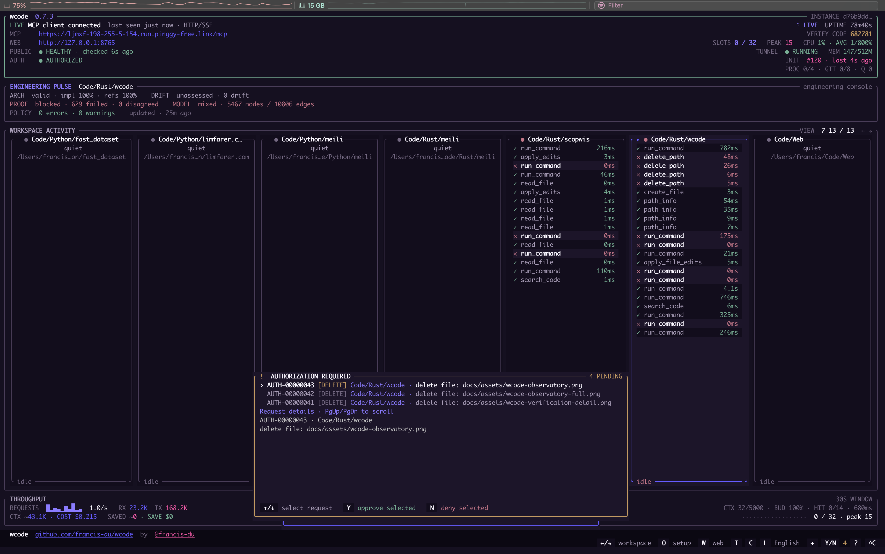
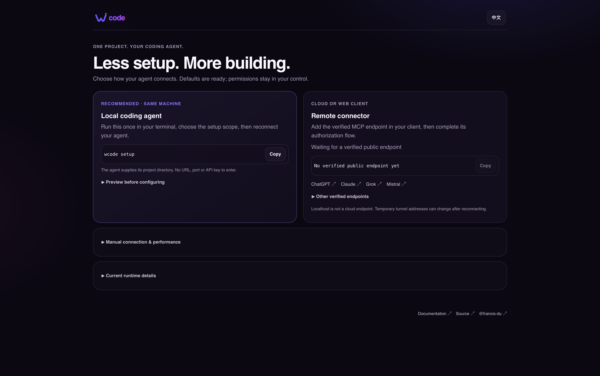
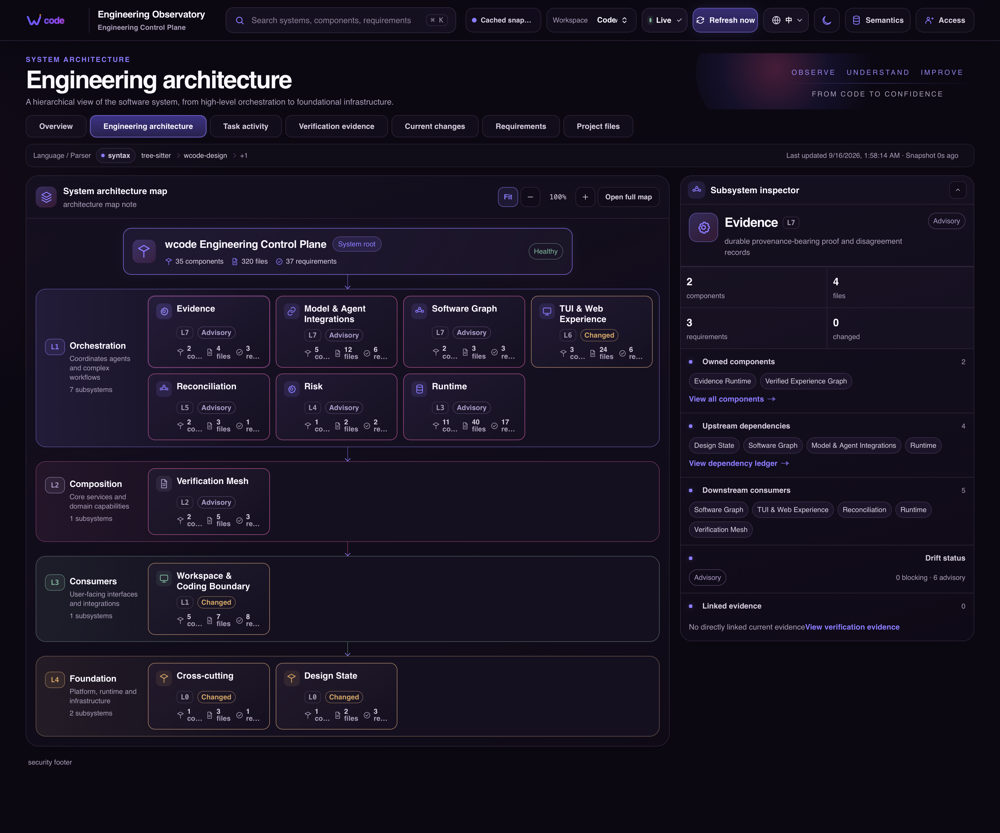
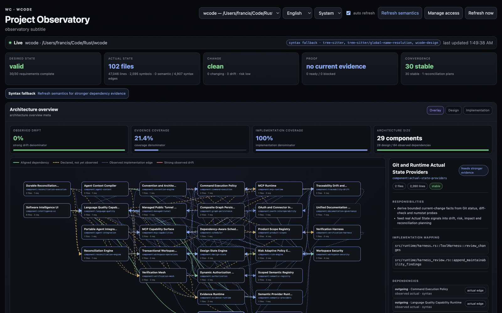
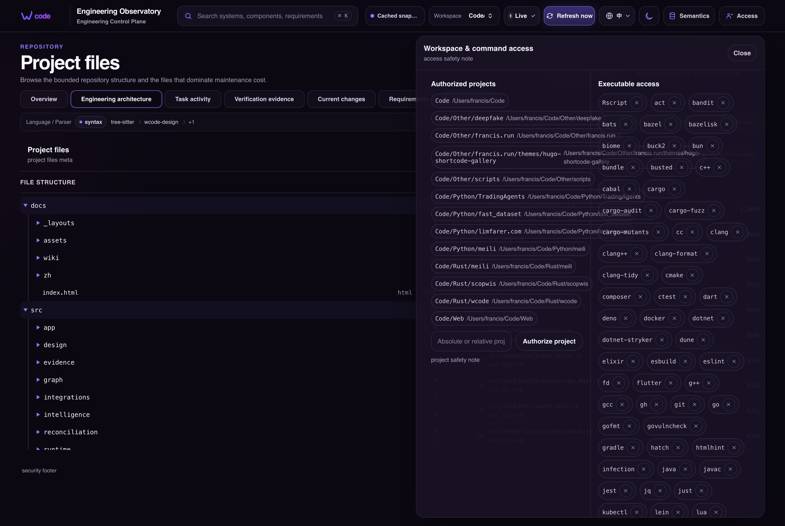
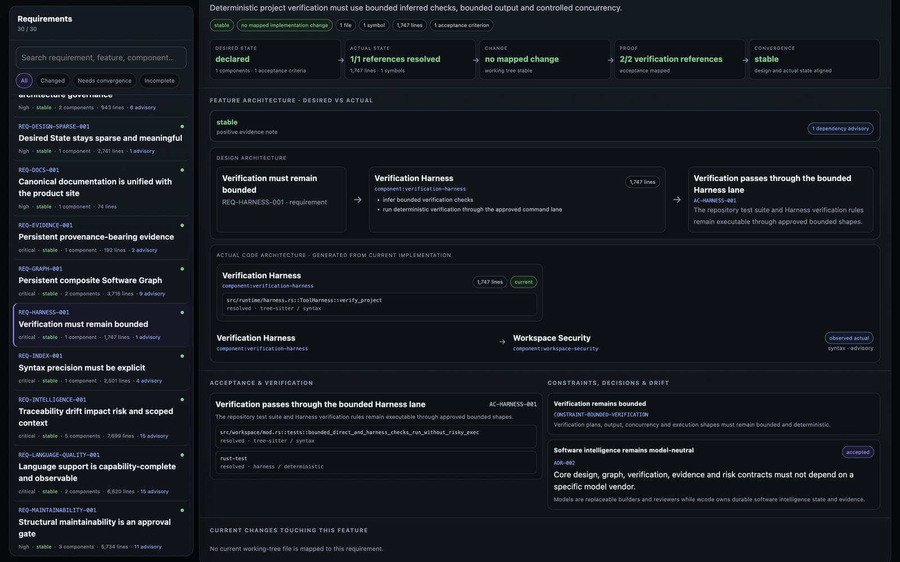
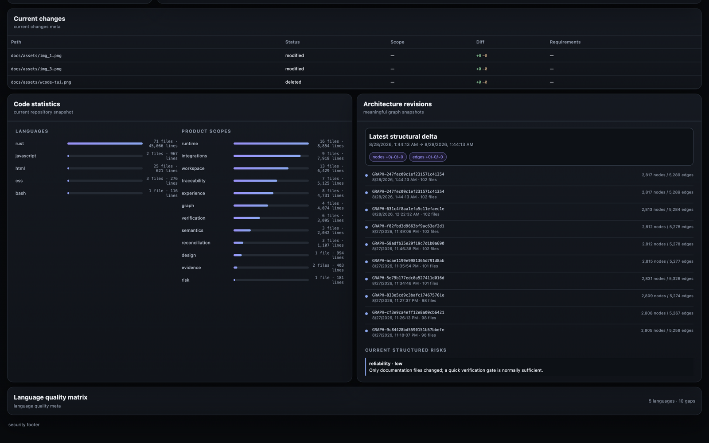

Install
curl -fsSL https://raw.githubusercontent.com/francis-du/wcode/main/install.sh | shmacOS and Linux. Windows has a PowerShell installer in the repository.
wcode keeps design, implementation, change risk, and verification evidence together. MCP clients can only access the Workspace you choose.
14:22:08 OAuth client registered
14:22:13 authorization granted
14:22:14 MCP tools/list 200
14:22:19 search_many · completed
wcode discovers project boundaries below that root, keeps them isolated as subspaces, and gives local and remote clients the same guarded toolset.
curl -fsSL https://raw.githubusercontent.com/francis-du/wcode/main/install.sh | shmacOS and Linux. Windows has a PowerShell installer in the repository.
wcode --workspace "$PWD"The TUI opens immediately. It shows the current MCP URL, tunnel state, OAuth session, pending approvals, and work by subspace.
wcode --workspace "$PWD" agent-plugin --install-all --dry-runReview the plan, then rerun without --dry-run. Web clients use the current HTTPS /mcp URL and complete OAuth in the browser.
Run wcode, press O to open Setup Hub, then use the current /mcp URL and complete OAuth.
wcodeClaude Code can use project-local stdio. Claude web connectors use the current HTTPS endpoint and OAuth.
wcodeAccount-level connectors cannot be installed from a repository. Setup Hub shows the endpoint and the manual steps that still belong in the client.
wcodePrefer stdio locally and Streamable HTTP remotely. Legacy clients may use /sse and POST /message; network transports never bypass OAuth.
wcodeThe TUI keeps the current endpoint, OAuth state, four runtime counters, subspace activity, and throughput in a stable layout. Detailed access and project views remain in the protected WebUI.







Local MCP: stdio. Remote MCP, preferred: Streamable HTTP at /mcp with OAuth. Legacy remote compatibility: SSE at /sse plus POST /message. All three reach the same Harness and Workspace policy. See the integration guide ↗ for exact setup steps.
“Config shape tested” means wcode can merge the project file safely. It does not claim that every release of that host passed an end-to-end OAuth test. Unknown or comment-bearing schemas are left alone.
wcode uses a real global semaphore plus a path-resource scheduler. Independent reads and writes can fan out; overlapping read/write paths, parent/child operations, moves, and deletes are dependency-ordered before execution, while compatible same-file/same-SHA edits can be coalesced safely.
The default is twelve times the logical CPU count, clamped to 96–192 slots. Use -j N only for an explicit override; the Harness accepts up to 256.
parallel_toolsFans out already-known read/discovery calls and workspace file writes after path-resource dependency checks. Every child owns a real permit, result, lifecycle, and dashboard row.
read_files and search_many use one efficient traversal when separate MCP calls would only add round trips.
verify_project overlaps cheap independent checks, then separates tests, Clippy, and builds to reduce compiler-cache contention.
Conflicting path operations are serialized; unsafe overlapping edit ranges are rejected, and file writes still use SHA-256 preconditions plus per-file locks.
Composite tools do not hold a parent permit while waiting for children, preventing one-slot deadlocks.
The TUI’s Slots and Peak values come from actual permit ownership.
Use it through MCP, wcode intelligence / wcode verification, the live TUI (I), or the token-protected Project Observatory (W). The WebUI is requirement-first: it compares functional/component Design State with current code-derived implementation and dependencies, then maps verification, ADRs, code statistics, Git changes, and architecture revisions back to each feature. The generic Software Graph remains a low-level intelligence primitive rather than the primary project visualization.
Add .wcode/project.yaml and .wcode/design/. Requirements, components, constraints, acceptance criteria, and decisions become structured Design State.
The Project Observatory follows Requirement → Components → current implementation → Acceptance/Verification, compares declared and code-derived dependencies, and reports per-feature code size alongside repository language/Product-Scope statistics and live Git changes.
After implementation, run review_changes, drift_status, impact_analysis, and risk_status. Change review also emits bounded maintainability signals for 1k-line threshold crossings, concentrated source growth, and large cross-scope churn.
verification_plan creates blind reviewer jobs; medium-and-higher risk plans include an independent maintainability_review job that correctness cannot replace. Cross-language Property/Mutation/Fuzz/Runtime executors produce real Stage Evidence; verify_project records deterministic Evidence.
Hardened first-party semantics are now on by default. A bounded Workspace-level LSP session is reused by background graph indexing and semantic_navigation, while ordinary localization stays on cheaper Tree-sitter/search. Read the v0.5.0 release notes ↗
Start coding with agent_context(goal, scopes=...) and follow its readiness / next_actions. Keep find_symbol / search_code as the cheap localization path; use semantic_navigation only when readiness recommends cross-file references, callers, implementations, rename impact, or equivalent semantic relationships. Load broader scope/design/project context only when the task needs it. After the change, run review_changes and verify_project, then add drift / impact / risk / independent maintainability review / evidence only when required. Product Scope reference ↗ · Maintainability policy ↗
Evidence, Verification, Semantic Facts, Graph Provider revisions/history, Reconciliation Plans, MCP Tasks, and execution state persist per workspace and survive runtime restarts.
All 22 indexed languages now have exactly one tested canonical LSP launch profile, and every canonical profile completes a real spawned stdio mock-LSP initialize handshake in tests; PHP, Python, and Ruby retain explicit installed-provider alternates. Warm sessions honor each server's advertised Full/Incremental/None document-sync contract; background graph indexing and foreground semantic_navigation reuse the same session. Stale semantic facts are excluded automatically, while syntax/search remains the default localization path.
Property / Mutation / Fuzz / Runtime-Canary use a cross-language executor registry with per-producer fail-closed Evidence aggregation. MCP 2026 clients that opt into io.modelcontextprotocol/tasks can run semantic refresh and stage execution as durable pollable tasks; legacy/non-opt-in clients keep the synchronous path.
wcode keeps models replaceable while owning protocol, authorization, Design State, software intelligence, tool scheduling, evidence, and filesystem policy. Each layer can evolve without binding the runtime to one model vendor or widening the trust boundary.
Modern requests use MCP 2026-07-28: stateless POSTs, routing headers, cache hints, and opt-in durable io.modelcontextprotocol/tasks for long semantic/verification work. Legacy or non-opt-in clients keep the synchronous tool path.
The first unauthenticated MCP call returns a standards-shaped bearer challenge. Clients discover resource and authorization metadata, register, run PKCE, and receive a resource-bound token.
A single global semaphore reflects real work. Bulk reads, independent fan-out, Git review, and quality gates use controlled concurrency without hiding child tasks from observability.
Tree-sitter symbols and project-aware context let models navigate source precisely before asking for broad file dumps, reducing latency and context pressure.
No API key pasted into a random client. A compatible client can discover the authorization server from the protected MCP endpoint.
The latest MCP revision prefers Client ID Metadata Documents, but explicitly keeps Dynamic Client Registration for backward compatibility. wcode does not fetch arbitrary client-provided metadata URLs by default because doing that safely requires a new outbound-network/SSRF trust boundary.
The model does not inherit your entire machine. Every path, edit, command, OAuth token, and concurrent task passes through explicit boundaries.
Only roots passed with --workspace exist from the model's point of view. Absolute paths, parent traversal, symlink aliases, broad roots, and protected credential/VCS paths fail closed.
Existing files are edited with SHA-256 preconditions and atomic bounded writes. Deletion is a separate path: only one regular file or empty directory can be removed after an exact one-shot authorization in the local TUI.
Commands run as argument arrays without a shell. Risky repository-aware operations fail closed until the operator approves the exact operation in the local TUI and retries it; --allow-risky-exec is the broader process-wide pre-authorization path. Exact Harness verification remains separately bounded.
PKCE protects authorization codes, redirect URIs are constrained, authorization codes are one-time and short-lived, refresh tokens rotate, and bearer tokens remain resource-bound.
If a Streamable HTTP request contains an Origin header, it must match the configured public MCP origin. This follows the MCP transport's DNS-rebinding guidance.
The TUI reports real queued, active, completed, and failed operations from the same task lifecycle that owns semaphore permits. It never simulates agent activity.
Guides, security boundaries, Agent integration, CLI/MCP reference, development notes, and releases now live in one bilingual documentation system.
workspace_infoDiscover roots, permissions, security policy, scheduler capabilities, and the canonical Product Scope registry.scope_statusAudit how the selected repository maps into the canonical Product Scope registry, including per-scope source counts and bounded unmapped supported-source paths.design_initBootstrap sparse Project/Product Design State without overwriting existing files; collection documents appear only when meaningful desired state exists.design_statusLoad and validate structured Desired Software State under .wcode/.software_graphBuild and persist a composite Design + Tree-sitter + first-party LSP + external-provider graph while preserving provider/precision/revision provenance.traceability_statusResolve Requirement → Component → implementation and Acceptance → verification chains.software_contextUse token-scored, budget-aware retrieval with optional Product Scope filters. Recognized scopes narrow source/symbol navigation while confirmed semantics and fresh semantic/runtime Graph neighborhoods retain provenance.semantic_status / semantic_queryInspect persistent candidate/confirmed/retired semantic facts; optional scopes filter scoped facts while unscoped facts remain global.semantic_record / semantic_confirm / semantic_retireRecord non-authoritative candidates and require explicit human attestation before confirmation or retirement.semantic_provider_status / semantic_provider_refreshCover all 22 indexed languages through first-party LSP adapters. Hardened providers are auto-maintained by default on the most-specific project Workspace; force-refresh stays available, non-profiled providers retain explicit trust, and unavailable servers remain syntax fallback.semantic_navigationReuse a bounded warm LSP session for symbol-first definition/hover, references, incoming/outgoing calls, implementations, and cross-file impact; simple localization stays on syntax/search.language_quality_status / language_quality_runExpose language support as a capability matrix across syntax, semantics, repository-declared format/lint/type/static/test/security tooling and advanced verification stages; run only declared, available, check-only providers and persist current-revision Evidence.graph_provider_import / graph_provider_statusIngest real SCIP/LSP/compiler/runtime graph facts with explicit provider, precision, and revision.graph_history / graph_query / graph_diffBrowse durable graph revisions, query bounded historical neighborhoods, and compare meaningful snapshots as added / removed / changed nodes and relationships without treating provenance revision churn as delete/add noise.drift_statusReport implementation drift and design drift against the current Git working tree.impact_analysisMap changed paths through Design mappings and bounded reverse call-graph propagation; return impacted symbols, transitive callers, graph precision/truncation, and API/security signals.risk_statusCombine change review, traceability gaps, and drift into structured risks plus a verification profile.reconciliation_planCreate and persist convergence tasks, graph-aware impact, Change IR intents, and a linked Verification Plan.reconciliation_status / reconciliation_historyRecover persisted plans by ID or list recent plans across reconnects, model changes, or runtime restarts.reconciliation_execution_statusInspect durable dependency-aware task execution synchronized with Verification and Human Approval Evidence.reconciliation_claim / reconciliation_submit / reconciliation_retryClaim runnable tasks, persist results as Evidence, and explicitly retry failed work while source edits remain inside wcode's normal guarded edit surface.verification_planCreate a risk-adaptive plan and persistent blind independent reviewer jobs.verification_claim / verification_submitClaim one capability-matched blind review job and persist summary, claims, risks, model identity, and verdict as Evidence.verification_executor_status / verification_execute_stagesInspect and run all applicable available cross-language Property / Mutation / Fuzz / Runtime-Canary executors. Readiness aggregates each producer's latest Evidence fail-closed, so one late Pass cannot mask another runner's Fail.verification_stage_submitAttach real Property / Mutation / Fuzz / Runtime-Canary results and artifact digests to a plan.verification_approveRecord explicit HumanApproval Evidence for critical plans; models cannot self-approve.verification_status / verification_historyInspect stage Evidence, reviewer disagreement, stale revision, human approval, blockers, readiness, and persisted plan history.evidence_statusRead immutable deterministic/model-review/stage/disagreement/human/reconciliation Evidence across runtime restarts.project_contextDetect project type, read bounded repository guidance, infer quality checks, and include the bounded repository convention report.convention_statusInspect detected-language policy plus bounded naming, architecture-domain classification, Product Scope mappings/gaps, unclassified root source files, oversized modules, and repository-architecture findings.file_outline / find_symbol / symbol_contextTree-sitter definitions, qualified names, exact ranges, and bounded syntax context.read_file / read_filesBounded UTF-8 reads with SHA-256 edit preconditions.read_mediaMetadata-first bounded PNG/JPEG/GIF/WebP/audio/video inspection. Image/audio payloads require the current MCP request to explicitly advertise run.francis.wcode/media-content; unknown or unsupported multimodal capability fails closed.search_code / search_manyFast exact-substring discovery, with a single-traversal bulk form.parallel_toolsSchedule independent read/discovery operations or workspace file writes; the resource dependency graph orders overlapping paths and safely coalesces compatible same-file/same-SHA edits.replace_text / write_file / apply_edits / create_* / move_*Atomic bounded workspace writes, creates, and moves with SHA/path safeguards; independent children are scheduled by resource conflict.delete_pathDelete one regular file or empty directory only after exact one-shot local TUI or protected-WebUI authorization. File deletion also requires the current SHA-256; recursive/root/protected/symlink/hard-link deletion remains blocked.review_changesBounded Git working-tree risk review without returning the whole diff.verify_projectRun inferred quick/full quality gates and record deterministic Evidence.run_commandPolicy-checked no-shell execution. A small safe set is pre-authorized; other bare executable names enter per-Workspace authorization. Exact git add/commit -m/git push <remote> <refspec> shapes may enter RiskyExecution approval; force/delete/reset/restore-style mutations remain blocked.wcode --workspace "$PWD"Use mcp-stdio for a local client. Use agent-plugin --install-all --dry-run to review project-local client changes before applying them. Press O, or pass --open, when you want Setup Hub in a browser. The complete and current flag list lives in the CLI reference.
--public-url https://…Use a stable reverse proxy instead of a temporary tunnel.
--tunnel-provider auto|cloudflare|localhost-run|pinggy|tailscaleSelect one provider, or let auto keep every health-verified endpoint.
--read-onlyDisable file modification tools.
--no-execDisable command execution.
--no-semanticDisable every first-party language-server session and use syntax fallback.
--no-monitorDisable the live terminal dashboard.
The public /healthz endpoint exposes layered status instead of flattening everything into “disconnected”: public URL health, tunnel process, OAuth registration, OAuth authorization, MCP connectivity, protocol revisions, initialize count for legacy clients, last-seen time, and task pressure.
{
"ok": true,
"mcp_connected": true,
"oauth_authorized": true,
"modern_protocol_version": "2026-07-28",
"supported_protocol_versions": [
"2026-07-28", "2025-11-25", "2025-06-18",
"2025-03-26", "2024-11-05"
]
}Cloud AI products such as Grok and Claude connect from their own infrastructure. A localhost address is unreachable to them. wcode can create a temporary managed HTTPS tunnel with automatic provider fallback, or you can pass a stable --public-url.
Yes. Client registrations and tokens are stored for the configured Workspace roots and loaded again after restart. A new tunnel must still pass the current instance health check, and authorization stays on the hostname the client actually opened.
No. The tunnel only supplies reachability. The MCP endpoint still returns a bearer challenge and requires OAuth before tool calls are accepted.
Because that would weaken wcode's default security model and create long-lived secrets users need to paste into third-party apps. Clients with only static-header support are documented as transport-compatible rather than silently downgrading authentication.
The ecosystem does not update in lockstep. wcode speaks the stateless 2026 revision and keeps the established 2024/2025 request path so current IDEs, desktop chats, and cloud connectors can migrate independently.
Not by default. Broad roots and overlapping workspace roots are rejected unless you explicitly expand the trust boundary with dedicated flags.
Client configuration changes over time. Cards marked “config tested” were exercised against their local schema; other entries state only what the linked product documentation supports.
curl -fsSL https://raw.githubusercontent.com/francis-du/wcode/main/install.sh | sh